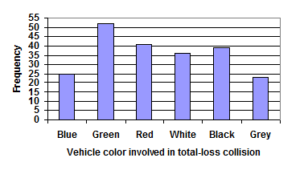
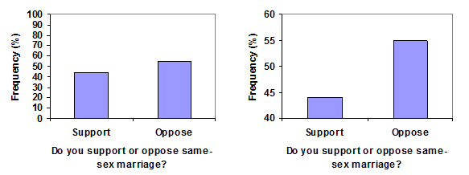
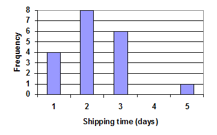

2.1
Presenting Categorical Data Graphically
Learning Objectives
Upon completion of this section, you should be able to
- Create a frequency table
- Create bar graphs
- Create pie charts
- Identify common graphical mistakes
Presenting Categorical Data Graphically
Categorical, or qualitative, data are pieces of information that allow us to classify the objects under investigation into various categories. We usually begin working with categorical data by summarizing the data into a frequency table.
Frequency Table
A frequency table is a table with two columns. One column lists the categories, and another for the frequencies with which the items in the categories occur (how many items fit into each category).
Example 1
An insurance company determines vehicle insurance premiums based on known risk factors. If a person is considered a higher risk, their premiums will be higher. One potential factor is the color of your car. The insurance company believes that people with some color cars are more likely to get in accidents. To research this, they examine police reports for recent total-loss collisions. The data is summarized in the frequency table below.
| Color | Frequency |
|---|---|
| Blue | 25 |
| Green | 52 |
| Red | 41 |
| White | 36 |
| Black | 39 |
| Grey | 23 |
I would caution you on interpreting this data at this point. One of the things we didn't examine was the number of potential of cars of each type of color on the road. Hypothetically speaking if there were twice as many Green cars as Blue cars on the road the difference in the number of Green cars in accidents and Blue cars in accidents may be explained by that total difference in the number of cars of each color on the road.
Sometimes we need an even more intuitive way of displaying data. This is where charts and graphs come in. There are many, many ways of displaying data graphically, but we will concentrate on one very useful type of graph called a bar graph. In this section we will work with bar graphs that display categorical data; the next section will be devoted to bar graphs that display quantitative data.
Bar graph
A bar graph is a graph that displays a bar for each category with the length of each bar indicating the frequency of that category.
To construct a bar graph, we need to draw a vertical axis and a horizontal axis. The vertical direction will have a scale and measure the frequency of each category; the horizontal axis has no scale in this instance. On the horizontal axis we will create bars to represent each category. It is important that the bars are evenly spaced and each have the same width. The construction of a bar chart is most easily described by use of an example.
Example 2
You would start the process with identifying the frequency as the vertical axis values and the horizontal axis being made up of the categories (color of car). On the vertical axis we look at our data to determine the largest value as we will need to make sure the bar graph can be displayed up to that height. Using our car data above we see the highest frequency is 52, so our vertical axis needs to go from 0 to 52, but we might as well use 0 to 55, so that we can put a hash mark every 5 units. For each category you will create a bar going from 0 to the frequency value in the table (as shown below):
Notice that the height of each bar is determined by the frequency of the corresponding color. The horizontal gridlines are a nice touch, but not necessary. In practice, you will find it useful to draw bar graphs using graph paper, so the gridlines will already be in place, or using technology. Instead of gridlines, we might also list the frequencies at the top of each bar, like this:

These types of graphs are typically easy to create in a spreadsheet program, like Excel or Google Sheets.
In the above example, our chart might benefit from being reordered from largest to smallest frequency values. This arrangement can make it easier to compare similar values in the chart, even without gridlines. When we arrange the categories in decreasing frequency order like this, it is called a Pareto chart.
Video Summary of Example 1 and 2 (4 mins 19 secs - CC)
Pareto chart
A Pareto chart is a bar graph ordered from highest to lowest frequency.
Example 3
Transforming our bar graph from earlier into a Pareto chart, we get:
![Bar Graph for data on number of accidents for each color with height of each bar labeled on top of each bar and bars are in decreasing order based on Frequency. Horizontal Axis: 'Vehicle color involved in total-loss collision.' Vertical Axis: 'Frequency.' First bar is labeled Blue with height of 25. Second bar is labeled Green with height of 52. Third bar is labeled Red with height of 41. Fourth bar is labeled White with height of 26. Fifth bar is labeled Black with height of 39. Sixth bar is labeled Grey with a height of 23.](../../images/chapter-2/2-1/car-example-bar-graph-pareto.png)
Video Solution Example 3 (1 mins 58 secs - CC)
Example 4
In some cases the bar graph categories may have an implied order (like dates or quarters) and we would not want to move those categories in a different order as it would lose the meaning behind the graphic. Take the example below from Statista about the revenue for Zoom. As you read this graph we are seeing a progression in time of the revenue growth of Zoom. Reordering from largest to small would lose the meaning behind what we are seeing with the visual representation of the revenue growth through time and the huge increase in the 2021 fiscal year report (not 2021 fiscal year started in January 2020). That huge increase in growth was explained by the start of the Covid-19 Pandemic.
 You will find more infographics at Statista
You will find more infographics at Statista Example 5
In a survey, adults were asked whether they personally worried about a variety of environmental concerns. The number (out of 1012 surveyed) indicating that they worried “a great deal” about some selected concerns is summarized below.
| Environmental Issue | Frequency |
|---|---|
| Pollution of drinking water | 597 |
| Contamination of soil and water by toxic waste | 526 |
| Air pollution | 455 |
| Global warming | 354 |
This data could be shown graphically in a bar graph:

To show relative sizes, it is common to use a pie chart. In a pie chart a circle is divided into wedges where each category represents a wedge. The size of the wedge of the whole circle is relative to the frequency for that category when compared to all of the data. If one category represents 25% of the data, than the wedge for that category would be 25% of the circle.
Pie Chart
A pie chart is a circle with wedges that represent each categories relative frequencies.
Example 6
To construct a pie chart for the vehicle color data we start by adding a new column to our original frequency table and title it as Relative Frequency. The relative frequency for each car color is then found by taking . For example to find the Blue relative frequency first find the total number in our frequency column (25+52+41+36+39+23=216) and then calculate the relative frequency:
Now do this for each vehicle color:
| Color | Frequency | Relative Frequency |
|---|---|---|
| Blue | 25 | 11.6% |
| Green | 52 | 24.1% |
| Red | 41 | 19.0% |
| White | 36 | 16.7% |
| Black | 39 | 18.1% |
| Grey | 23 | 10.6% |
For our vehicle color data, a pie chart might look like this:
![Pie chart labeled 'Vehicle color involved in total-loss collisions' where each slice of the pie is the same color of the vehicle color it represents. The size of the slice is the relative size of each colors count of the whole. Blue has 11.6% of the total area. Green has 24.1% of the total area. Red has 19.0% of the total area. White has 16.7% of the total area. Black has 18.1% of the total area. Grey has 10.1% of the total area. A legend is included which indicates which color on the pie chart is related to each color of the vehicle in a total-loss collision.](../../images/chapter-2/2-1/car-example-pie-chart.png)
When looking at the above pie chart you may have a hard time determining which wedge is the largest, 2nd largest, and so on. Pie charts can often benefit from including frequencies or relative frequencies (percent) in the chart next to the pie slices. Often having the category names in a legend next to the pie slices is helpful we can also attach the names to the slices in most programs (as seen below).
![Pie chart labeled 'Vehicle color involved in total-loss collisions' where each slice of the pie is the same color of the vehicle color it represents. Next to each slice of pie the frequency is also given. The size of the slice is the relative size of each colors count of the whole. Blue has 11.6% of the total area with a frequency of 25. Green has 24.1% of the total area with a frequency of 52. Red has 19.0% of the total area with a frequency of 41. White has 16.7% of the total area with a frequency of 36. Black has 18.1% of the total area with a frequency of 39. Grey has 10.1% of the total area with a frequency of 23.](../../images/chapter-2/2-1/car-example-pie-chart-with-frequencies.png)
Video Solution Example 5 (4 mins 49 secs - CC)
Example 7
The pie chart to the right shows the percentage of voters supporting each candidate running for a local senate seat.
If there are 20,000 voters in the district, the pie chart shows that about 11% of those, about 2,200 voters, support Reeves.

Take note that without the percentages labeled on the graph it would be hard to determine if Ellison had indeed received more votes than Douglas. By including the percentages we give both a visual and numeric way to compare different groups in the pie chart.
Video Solution Example 6 (1 mins 1 secs - CC)
Pie charts look nice, but are harder to draw by hand than bar charts since to draw them accurately we would need to compute the angle each wedge cuts out of the circle, then measure the angle with a protractor. Computers are much better suited to drawing pie charts. Common software programs like Excel or Google Sheets are able to create bar graphs, pie charts, and other graph types. There are also numerous online tools that can create graphs, such as Create a Graph or Google Docs.
Try it Now 1
Create a bar graph and a pie chart to illustrate the grades on a history exam below.
A: 12 students, B: 19 students, C: 14 students, D: 4 students, F: 5 students
Answer
Start with creating a frequency table and adding the relative frequency column (for the pie chart).
| Grade | Frequency | Relative Frequency |
|---|---|---|
| A | 12 | |
| B | 19 | |
| C | 14 | |
| D | 4 | |
| F | 5 |
Both charts are given below.
![Two graphs displayed. First is a bar graph with Grade on horizontal axis and Frequency on vertical axis. First bar represents A with a frequency of about 12, second bar represent B with a frequency about 18, third bar represents C with a frequency of about 14, fourth bar represents D with a frequency of about 4, fifth bar represents F with a frequency of 5. The second graph is a pie chart. Each letter grade represents a different region and has the percentage of students labeled next to the letter grade: A 22%, B 36%, C 26%, D 7%, and F 9%.](../../images/chapter-2/2-1/history-exam-grades.png)
Be aware we only did the relative frequency as an exercise to show where the numbers in the pie chart came from. Typical software packages do not require you to do that step.
Common Mistakes on Graphs
Video Summary of Bad Graphs (3 mins 3 secs - CC)
Don’t get fancy with graphs! People sometimes add features to graphs that don’t help to convey their information. For example, 3-dimensional bar charts like the one shown on the right are usually not as effective as their two-dimensional counterparts. This chart makes it very challenging to determine the heights of the bars due to the horizontal axis being skewed. It would be really challenging to determine if there were more blue or more black cars involved in a total-loss collision.

Here is another way that fanciness can lead to trouble. Instead of plain bars, it is tempting to substitute meaningful images. This type of graph is called a pictogram.
Pictogram
A pictogram is a statistical graphic in which the size of the picture is intended to represent the frequencies or size of the values being represented.
Example 8
A labor union might produce the graph to the right to show the difference between the average manager salary and the average worker salary.

Looking at the picture, it would be reasonable to guess that the manager salaries is 4 times as large as the worker salaries – the area of the bag looks about 4 times as large. However, the manager salaries are in fact only twice as large as worker salaries, which were reflected in the picture by making the manager bag twice as tall.
Try it Now 2
Carefully examine the 2011 State of the Union address graphic given below. Does anything seem wrong? What caused the error?

Hint 1
Answer
Another distortion in bar charts results from setting the baseline to a value other than zero. The baseline is the bottom of the vertical axis, representing the least number of cases that could have occurred in a category. Normally, this number should be zero. There are times where setting this number higher is needed to show differences in values on the graph, but other times this change dramatically changes the message from the data as shown in the next example.
Example 9
Compare the two graphs below showing support for same-sex marriage rights from a poll taken in December 2008. The difference in the vertical scale on the first graph suggests a different story than the true differences in percentages; the second graph makes it look like twice as many people oppose marriage rights as support it.
In the above example we saw that by changing this vertical axis we are allowing for a different story to be told. On the flip side it is sometimes helpful to do this to allow for the examination of close differences between groups.
Try it Now 3
A poll was taken asking people if they agreed with the positions of the 4 candidates for a county office. The poll found that 42% agreed with Nguyen's position, 35% agreed with McKee's position, 52% agreed with Brown's position, and 64% agreed with Jones position.
Does the pie chart given to the right present a good representation of this data? Explain.
Answer
Exercises
Please work on all the problems listed below for homework. You may ask questions in the discussion forum (it is also a great place to compare answers with your classmates).
- The table below shows scores on a Math test.
80
50
50
90
70
70
100
60
70
80
70
50
90
100
80
70
30
80
80
70
100
60
60
50
- Treat the scores 30, 40, 50, 60, 70, 80, 90, and 100 as a category. Complete the frequency table for the Math test scores.
Test Score Score Frequency 30
40
50
60
70
80
90
100
- Construct a bar graph of the data
- Construct a pie chart of the data
Answer
- Treat the scores 30, 40, 50, 60, 70, 80, 90, and 100 as a category. Complete the frequency table for the Math test scores.
- A group of adults where asked what type (model) of cars they had in their household
- Complete the frequency table for the car number data
- Construct a bar graph of the data
- Construct a pie chart of the data
Type (model) of cars in your household Ford Kia Jeep Ford Toyota Toyota Chevy Honda Ford Toyota Honda Chevy Kia Chrysler Honda Jeep Ford Ford Toyota Kia Ford Toyota Chevy Toyota Answer
-
A group of adults were asked how many children they have in their families. The bar graph to the right shows the number of adults who indicated each number of children.
- How many adults where questioned?
- What percentage of the adults questioned had 0 children?

Answer
- Jasmine was interested in how many days it would take an order of a single movie from Netflix to arrive at her door. The graph below shows the data she collected. The frequency represents orders of a single movie. 
- How many movies in all did she order?
- What percentage of the movies arrived in one day? Round to the nearest tenth.
Answer
- The bar graph below shows the percentage of students who received each letter grade on their last English paper. The class contains 20 students. What number of students earned an A on their paper?

Answer
- Kori categorized her spending for this month into four categories: Rent, Food, Fun, and Other. The percents she spent in each category are pictured here. If she spent a total of $2600 this month, how much did she spend on rent?

Answer
- A graph appears below showing the number of adults and children who prefer each type of soda. There were 130 adults and kids surveyed. Discuss some ways in which the graph below could be improved

Answer
- The graph below shows the number of complaints for six different airlines as reported to the US Department of Transportation in February 2013. Alaska, Pinnacle, and Airtran Airlines have far fewer complaints reported than American, Delta, and United. Can we conclude that American, Delta, and United are the worst airline carriers since they have the most complaints?

Answer
- Below is a frequency table that shows the number of covid cases in some Arizona Counties on May 7 2021 in thousands. (source: azdhs.gov/covid19/data/index.php).
Arizona Covid Cases Arizona County Covid Cases in Thousands Maricopa
540
Pima
115
Pinal
52
Yuma
37
Mohave
23
Yavapai
19
- Construct a bar graph to represent the data for the number of covid cases (in thousands) for the Arizona Counties.
- What danger is there to compare the values for each county directly against each other?
- From the bar graph it seems clear Maricopa has many more cases of covid when compared to Yuma (about 15 times as many). If you factor in the population for each county we can get a better understanding of the penetration of Covid-19. According to the the recent 2019 census Maricopa has a population of 4,485,414 and Yuma has a population of 209,468. Which county has a higher percent of covid cases?